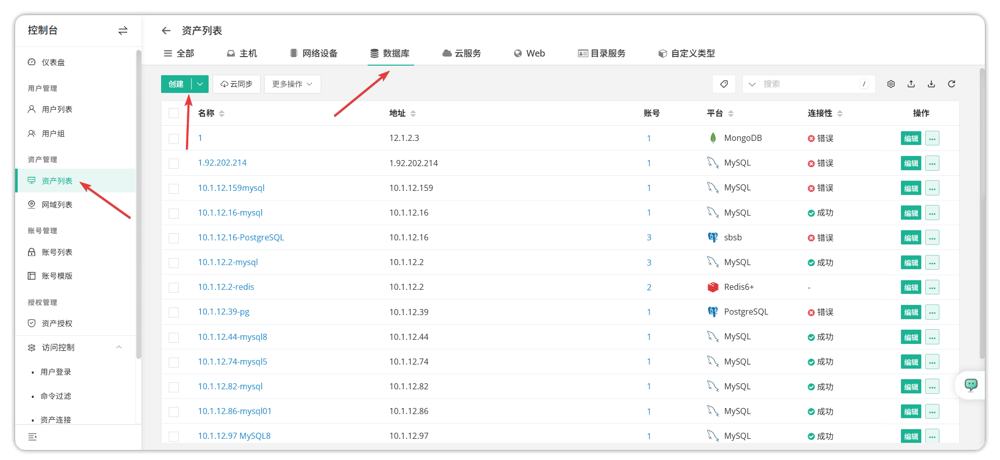
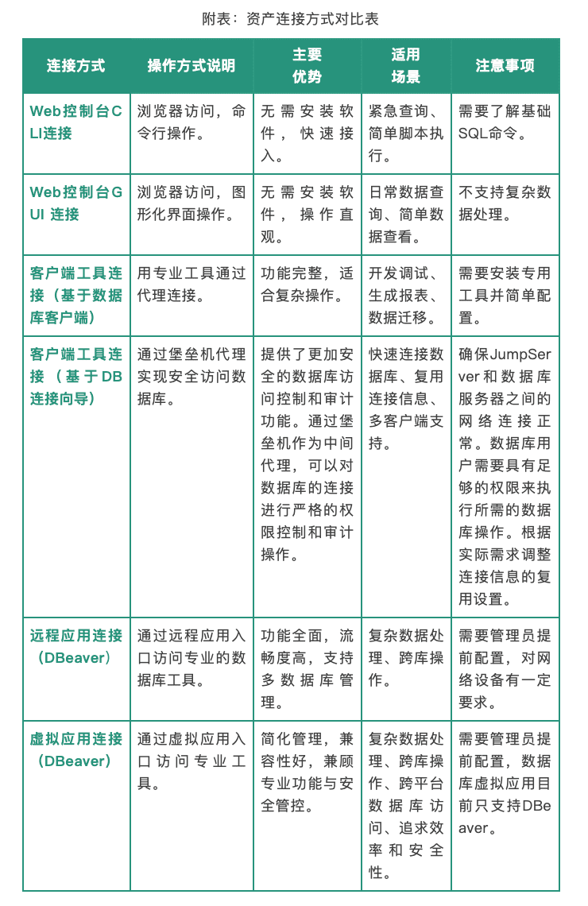

本教程主要介绍在JumpServer V4版本中纳管MySQL数据库和托管信息查询（例如账号密码、端口）的方法，MySQL资产连接方式与特点对比，MySQL数据库资产连接常见报错的处理与排查思路，以及最佳实践建议。
MySQL是一款开源关系型数据库管理系统，它利用结构化查询语言（SQL）来存储、检索和管理数据。JumpServer开源堡垒机支持对MySQL数据库的纳管与连接。
一、MySQL 数据库纳管流程（基于JumpServer标准功能）
1. 前提条件
■ 已经部署JumpServer社区版或者企业版（建议部署V4版本）；
■ 待纳管的MySQL数据库实例网络可达，且拥有至少一个可访问MySQL数据库的账号（例如Root账号）。
2. 纳管步骤
首先是添加资产。登录JumpServer控制台，依次选择“资产列表”→“数据库 ”→“创建”，在平台类型中选择“MySQL”，填写基本信息如下：
■ 名称：建议使用“业务名-MySQL-环境”的格式；
■ 地址：MySQL实例的IP地址或者域名；
■ 平台：默认为MySQL；
■ 节点：选择属于自己的节点；
■ 默认数据库：填写自己要使用的数据库（连接之后的第一个库，连接上后仍可切换）；
■ 协议组：默认为mysql 3306；
■ 安全：支持SSL/TLS（可选）。


接下来添加数据库资产账号。在资产列表中新增账号，填写信息如下，然后点击“确认”按钮。
■ 名称：自定义名称；
■ 用户名：MySQL登录账号（例如Root或专用管理账号）；
■ 特权账号：根据实际需求勾选（建议用于管理场景）；
■ 密码：对应的账号密码。
然后进行资产授权。在JumpServer中选择“资产授权”→“创建”，填写该资产授权名称，并进行设置，设置有效期后点击“提交”按钮。相关设置信息如下：
■ 资产/节点：已添加的MySQL资产/ 已添加的MySQL资产所在的节点；
■ 用户/用户组：需要授权访问的JumpServer用户；
■ 账号：所有账号/指定账号/虚拟账号/无；
■ 协议组：全部协议/指定协议；
■ 动作：全部/连接/文件传输/剪贴板/分享。
二、托管信息查询方法
在JumpServer控制台可以查询资产基本信息，在JumpServer左侧菜单选择“资产列表”选项，点击对应MySQL资产名称，可以获取IP地址、端口、资产编号、所属节点等信息。
资产账号密码查询的方法为：在JumpServer依次选择“资产列表”→对应SQL资产名称→账号，可以查看该资产的所有被纳管的系统账号用户名，点击“查看”按钮可以查看密码。注意：密码默认隐藏，需要具有管理员权限且开启MFA才能查看和重置。
三、MySQL资产连接方式及特点对比
■ Web控制台CLI连接：控制台→资产→选择MySQL资产，依次点击“连接”→“Web”→“Web CLI”。
■ Web控制台GUI连接：控制台→资产→选择MySQL资产，依次点击“连接”→“Web”→“Web GUI”。
■ 客户端工具连接（基于数据库客户端，JumpServer企业版支持）：在JumpServer的资产详情页点击“连接”→“客户端”→“数据库客户端”，下载并导入连接配置，使用MySQL Workbench或Navicat等工具导入配置。
■ 客户端工具连接（基于DB连接向导，JumpServer企业版支持）：在JumpServer的资产详情页点击“连接”→“客户端”→“DB连接向导”后，可以有两种方式进行连接。
方法一：在命令行终端中安装相应的数据库客户端（如MySQL客户端），并执行复制的命令来连接数据库；
方法二：使用数据库管理工具（例如Navicat、SQLyog等），将JumpServer提供的加密信息复制到连接参数中，进行数据库连接。
■ 远程应用连接（以DBeaver为例，部分应用需要JumpServer企业版支持）：首先给对应发布机部署远程应用，然后在JumpServer资产详情页点击“连接”→“远程应用”→“DBeaver”。
■ 虚拟应用连接（以DBeaver为例，仅JumpServer企业版支持）：在JumpServer中启用并上传虚拟应用，然后在JumpServer资产详情页点击“连接”→“虚拟应用”→“DBeaver”。
四、常见报错的处理与排查思路
1. 网络不通（连接拒绝）
现象：连接尝试后长时间无响应，最终提示超时。
排查步骤
① 检查网络连通性：ping <mysql-ip> / telnet <mysql-ip> <port>；
② 确认MySQL服务是否正常运行；
③ 检查防火墙规则：确保JumpServer与MySQL之间的端口开放，如果是公有云上数据库还需要确认安全组是否放行MySQL服务端口；
④ 查看MySQL配置：是否允许远程连接（bind-address）。
2. 提示连接数过多（Too many connections）
现象：无法正常连接数据库，后端日志报错“too many connections”。
排查步骤：
① 查看MySQL配置文件（通常是my.cnf或my.ini），找到max_connections参数，确认其设置值是否过小；
② 优化应用：检查是否有应用异常占用大量连接，或者连接没有正确关闭。优化应用逻辑，确保连接被有效管理和释放；
③ 考虑连接池：如果应用频繁连接和断开数据库，考虑使用连接池技术来管理数据库连接；
④ 重启MySQL服务：修改配置后，需要重启MySQL服务以使配置生效。
3. 权限不足（Permission denied）
现象：连接成功但执行操作时提示权限不足。
排查步骤：
① 检查JumpServer授权的系统用户权限范围；
② 在MySQL中检查账号实际权限，确认是否需要提升权限或创建专用角色。
4. 数据库用户名密码错误
现象：连接时MySQL报错：error: Error 1045 (28000): Access denied for user 'root'@'xx.xx.xx.xx' (using password: YES)
排查步骤：
① 检查数据库登录账号的密码是否正确；
② 在“资产列表”→“指定数据库资产”→“报错账号”中更新密文，更新后点击账号进行测试，待测试成功后重新访问MySQL即可。
5. MySQL服务器启用SSL但未配置
现象：连接时MySQL报错：error: Error 3159 (HY000): Connections using insecure transport are prohibited while --require_secure_transport=ON.
排查步骤：
① 如果不希望启用SSL，可以登录MySQL所在服务器，在/etc/mysql/my.cnf中查看require_secure_transport是否为“ON”，如果为“ON”可以先注释掉并重启MySQL服务；
② 如果需要配置完整的SSL连接信息，可以选择“资产列表”→“MySQL数据库”→“更新”→“使用SSL/TLS”，配置相关的证书密钥即可。
6. 使用客户端方式（数据库客户端）连接MySQL无响应
现象：使用客户端方式（数据库客户端）连接MySQL资产时无响应。
排查步骤：
① 首先排查当前网络环境是否正常，其他连接方式（例如Web方式/客户端DB向导方式/远程应用方式/虚拟应用方式）是否能正常连接到数据库，是否存在无响应的情况；
② 连接无响应说明本地已经安装了JumpServer客户端，只是未能基于此客户端成功拉起本地的客户端应用。因此可以优先打开本地的JumpServer客户端，找到数据库配置，查看应用路径是否正确（可以直接打开数据库客户端应用查看应用路径是否正确）。
7. 使用远程应用方式连接MySQL报错（Core APl发生错误）
现象：使用远程应用方式连接MySQL资产时报错“Core APl”发生错误：connect APl core err: No host account available, please check the applet, host and account”。
排查步骤：
这种报错通常是远程应用发布机出现故障（例如发布机处于离线状态、Tinker组件异常、远程应用发布失败等），因此解决思路为重新部署远程应用发布机以及远程应用（例如DBeaver），直至发布机负载状态为正常后尝试重新连接MySQL资产即可。
五、最佳实践建议
账号管理
■ 为不同角色创建专用MySQL账号（管理员、开发、只读）；
■ 定期通过JumpServer轮换数据库密码（建议90天一次）。
安全配置
■ 禁用MySQL Root账号直接通过JumpServer访问；
■ 启用连接审计机制，保留至少180天的审计日志；
■ 限制JumpServer访问源IP地址，仅允许特定服务器连接。
性能优化
■ 为频繁访问的MySQL资产配置连接池；
■ 大查询操作建议在非业务高峰期执行，并通过客户端工具进行连接。
灾备方案
■ 定期备份JumpServer中的资产配置和授权信息；
■ 建立连接失败的应急处理流程，确保关键操作不受影响。
通过以上流程和规范，可以实现MySQL数据库在JumpServer中安全、高效的纳管与连接，有效满足企业级运维的安全性和可审计性要求。